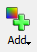
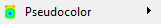
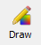
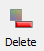
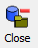

Module 5: Overview¶
As mentioned in the Getting Started – VisIt section, VisIt is used to visualize the simulated results from SCHISM’s binary output files. In this module you will learn the basics of using VisIt to evaluate modeled output data.
This module is adapted from Chapters 3 and 4 of the VisIt SCHISM Plug-In instruction manual found in the base folder of this tutorial repository.
Warning
Where do we want to point to the VisIt SCHISM Plug-In instruction manual?
Plotting Salinity¶
First, we will create a .visit file which points to the three salinity files in the folder for this module (“./modules/m5_visit”).
Create an empty text file in the m5_visit folder and name it “salinity.visit”
Copy the following lines of text into the salinity.visit file:
salinity_22.nc
salinity_23.nc
salinity_24.nc
This now gives VisIt a way to see the three salinity files as one dataset.
Start the VisIt application and go to File > Open File. Navigate to the “./modules/m5_visit” folder. From the “Open file as type:” drop-down select SCHISM. In the “File Grouping” Then select the salinity.visit file.
This opens the 3D salinity results file, but you need to add a plot object and then draw that in order to see the visualization.
Go to “Add”  button and select “Pseudocolor”  then “Salinity”. Now you’ll see the salinity.visit:Pseudocolor - salinity plot item in the plots pane. To see this plot rendered, you need to click the “Draw”  button.
{kind=link}
{kind=link}
{kind=link}
You should see a plot like the one below:
Fig. 7 Hello SCHISM salinity model results as viewed in VisIt without formatting¶
If you press the play button on the plotting window you can see how salinity oscillates. Pay attention to the legend and see how the legend changes its limits based on the min/max of each timestep. In order to fix the legend limits, double-click on the Pseudocolor plot item.
This will pop-out a plot attributes dialog box where you can set Limits to “Use Original Data” and set the minimum and maximum to 6 and 13, respectively.
Now you should see more color variation in the left-center portion of the model domain since the majority of the domain is in the 10-13 psu range.
Fig. 8 Hello SCHISM salinity model results as viewed in VisIt, formatted with color limits to allow better visualization of the salinity dynamics¶
Try resetting the time slider to 0000 and pressing play again and notice the difference between this animation and the last.
Note
If you want to view the model mesh then go to “Add > Mesh > 3D_Mesh” and then Draw the plot object. Now you can pan around and see the cell edges overlain on the model results.
Warning
(Note) To pan around without spinning into the Z space of the VisIt viewer DO THIS (I don’t know how to do this)
Plotting Velocity Vectors¶
This portion of the module uses the same folder as the salinity exercise, but we will close any of the datasets by first deleting all plot objects using the “Delete”  button, and then by using the “Close”  button for any active sources.
{kind=link}
{kind=link}
First we need to create a file called out2d.visit and populate it with the following lines:
out2d_22.nc
out2d_23.nc
out2d_24.nc
Using VisIt, open the out2d.visit file you just created - following the same steps as in the salinity exercise.
Now Add > Pseudocolor > depthAverageVel_magnitude and then Draw.
Again we will adjust the legend limits for this plot object, this time to be between 0.0 and 1.5 m/s.
To add velocity vectors, we’ll use the same data source (out2d.visit) but we’ll Add > Vector > depthAverageVel and then Draw.
Now to format the vectors we’ll double-click on the Vector plot object
In the Vectors tab, change the Vector amount to a Stride of 2
In the Data tab, change the color to constant, and choose white or black for the color
In the Glyphs tab, change the scale to 0.1
Hit Apply and close the window and now you’ll see your updated plot with vectors. Play the animation to see how the vectors change with time.
Fig. 9 Hello SCHISM depth-averaged velocity model results as viewed in VisIt, formatted with color limits to allow better visualization of the dynamics as well as velocity vectors scaled with magnitude¶